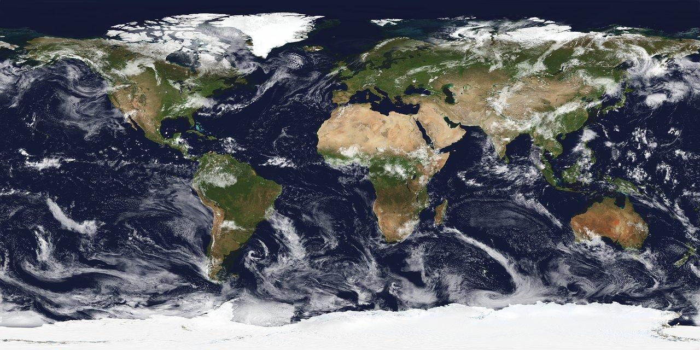
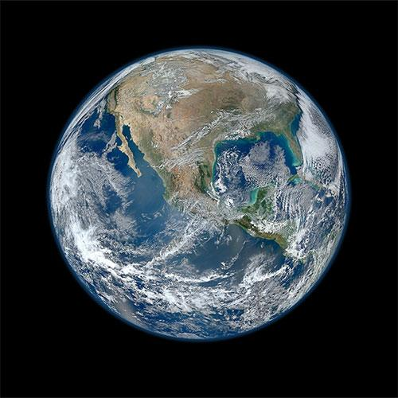
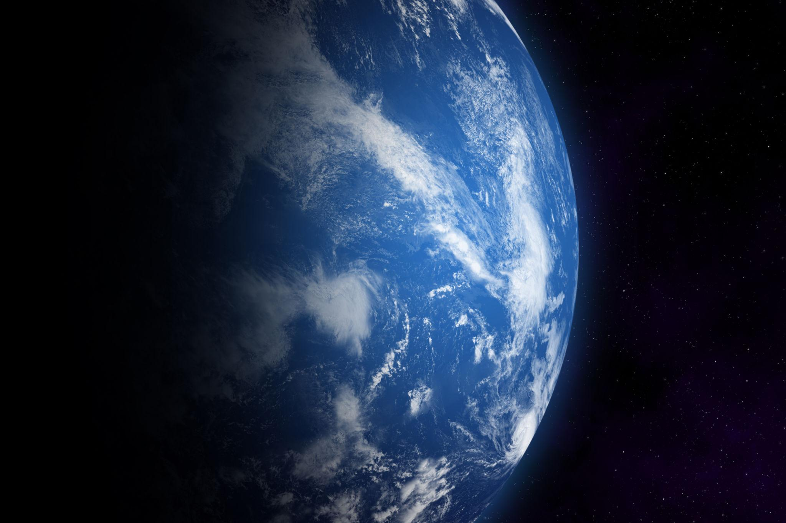
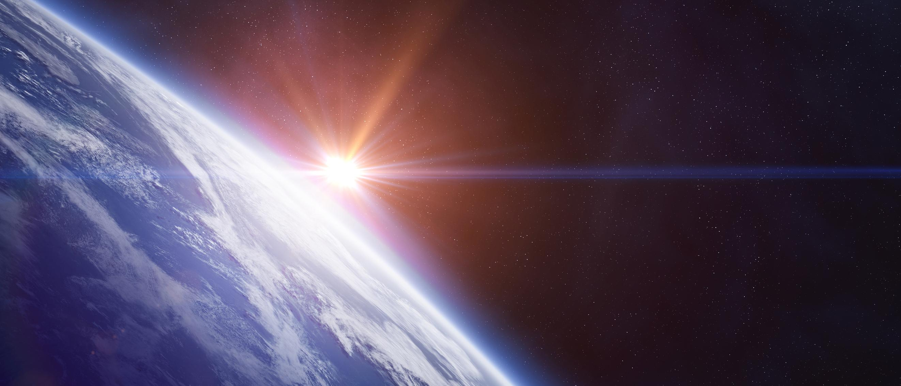
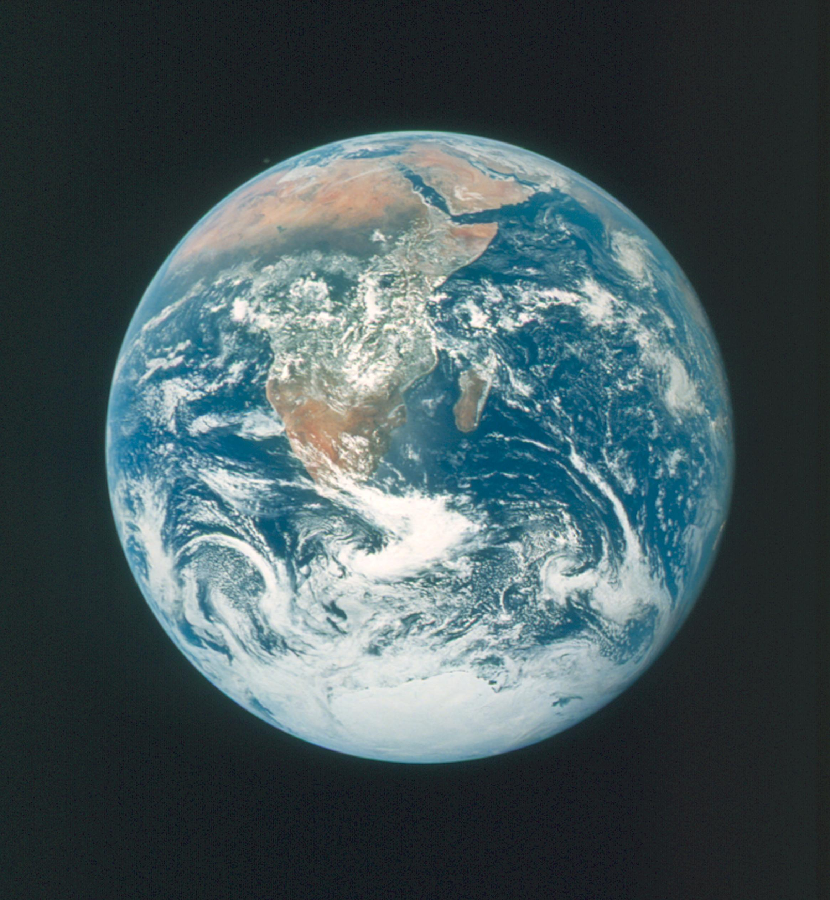
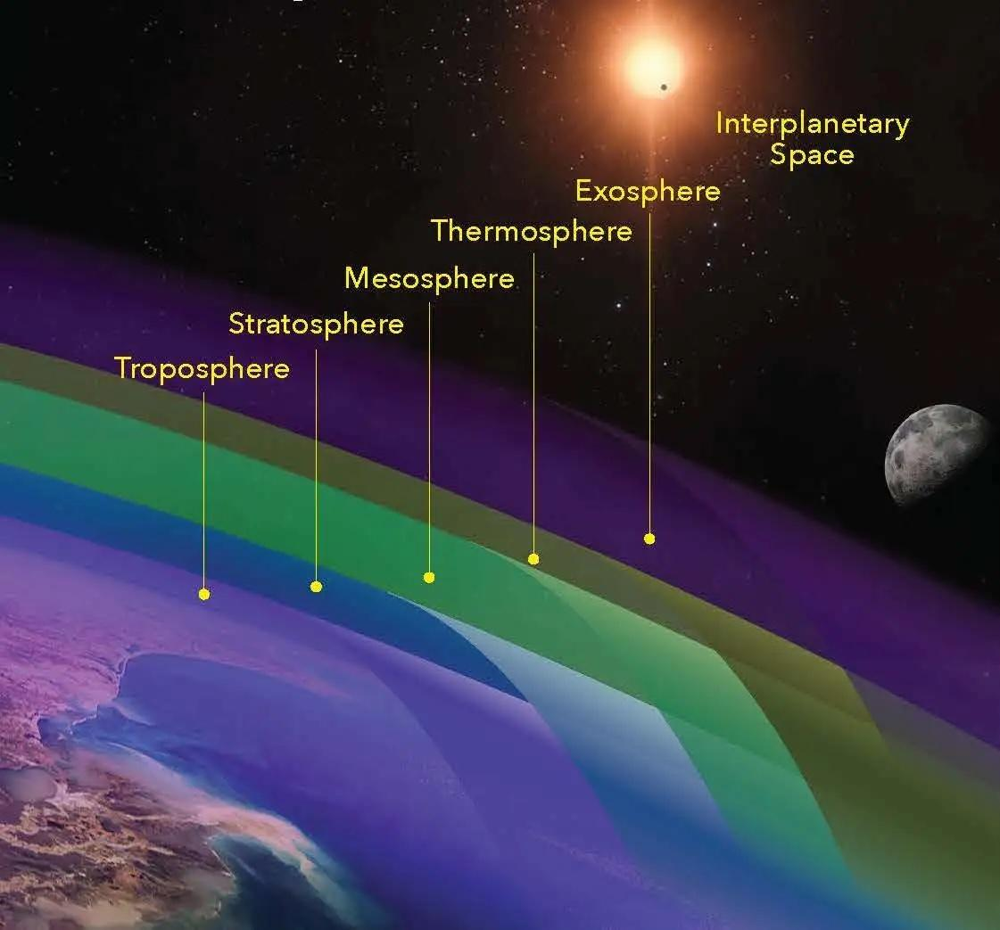
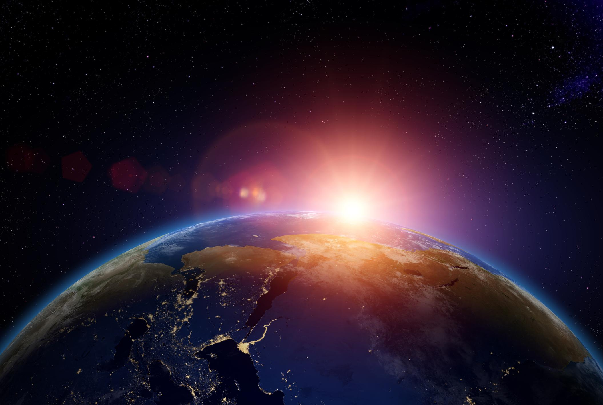

Diameter
Earth has a diameter of about 12,742 km.
Earth is the third planet from the Sun and the only known world that supports life.
Formed approximately 4.5 billion years ago, Earth has developed into a complex living planet with oceans, continents, clouds, and a protective atmosphere. Its position in the habitable zone allows liquid water to exist, which is one of the key ingredients for life.
Often called the Blue Planet, Earth appears blue from space because around 71% of its surface is covered by water. This water, together with land and atmosphere, creates the balance needed for ecosystems to exist and evolve.
Explore Full Story ›
Earth, the only known planet that supports life.
Earth is a balanced planet with oceans, land, an atmosphere, a magnetic field, and one Moon. These features work together to make Earth suitable for life.

Earth has a diameter of about 12,742 km.

One day on Earth lasts about 24 hours.

Earth takes 365.25 days to orbit the Sun.

Earth’s average temperature is about 15°C.
Around 71% of Earth’s surface is covered by oceans, while the remaining 29% consists of continents and islands. Oceans help control climate by absorbing and distributing heat.
The oceans also produce a large amount of Earth’s oxygen and support huge marine ecosystems. On land, Earth has mountains, forests, deserts, and plains, each supporting different life forms.

Earth’s oceans and land create different environments for life.

Earth’s atmosphere protects life and creates weather systems.
Earth’s atmosphere is mostly made of nitrogen and oxygen. It creates breathable air and protects living organisms from harmful radiation from the Sun.
The atmosphere also keeps temperatures stable and allows weather systems such as rain, wind, clouds, and storms to form. Without this protective layer, Earth would be too extreme for life to survive.
Beneath Earth’s surface is a layered structure that constantly reshapes the planet.
The crust is the outer layer where humans, plants, and animals live.
The mantle is a thick layer of moving rock that drives tectonic activity.
The core is made of metal and helps generate Earth’s magnetic field.
The Moon controls ocean tides and helps stabilize Earth’s tilt.
Earth is not just another planet. Its distance from the Sun, protective atmosphere, liquid water, magnetic field, and geological activity all work together to support life.
Scientists continue to search for life beyond Earth, but no other planet discovered so far has the same combination of conditions. This makes Earth rare, valuable, and special.
A video exploring the planets in our solar system.